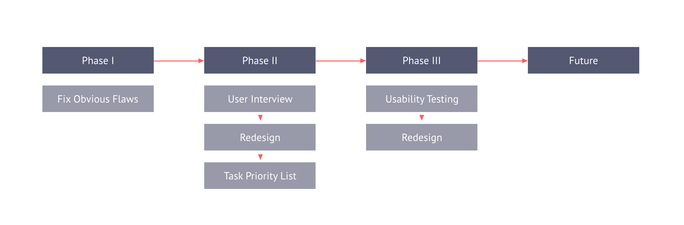
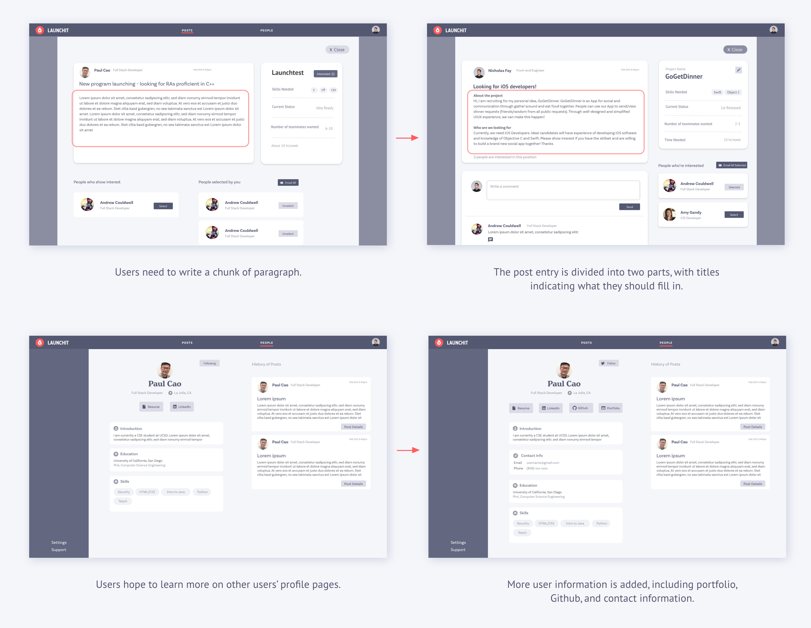
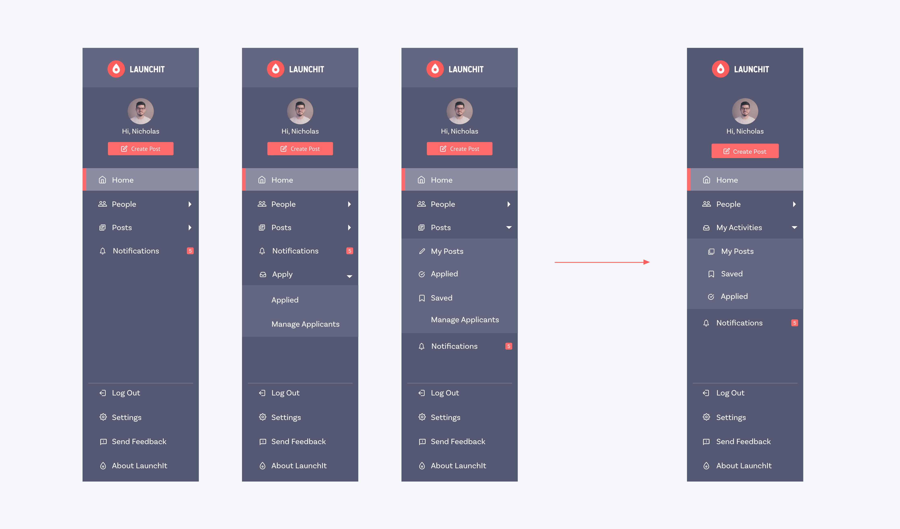
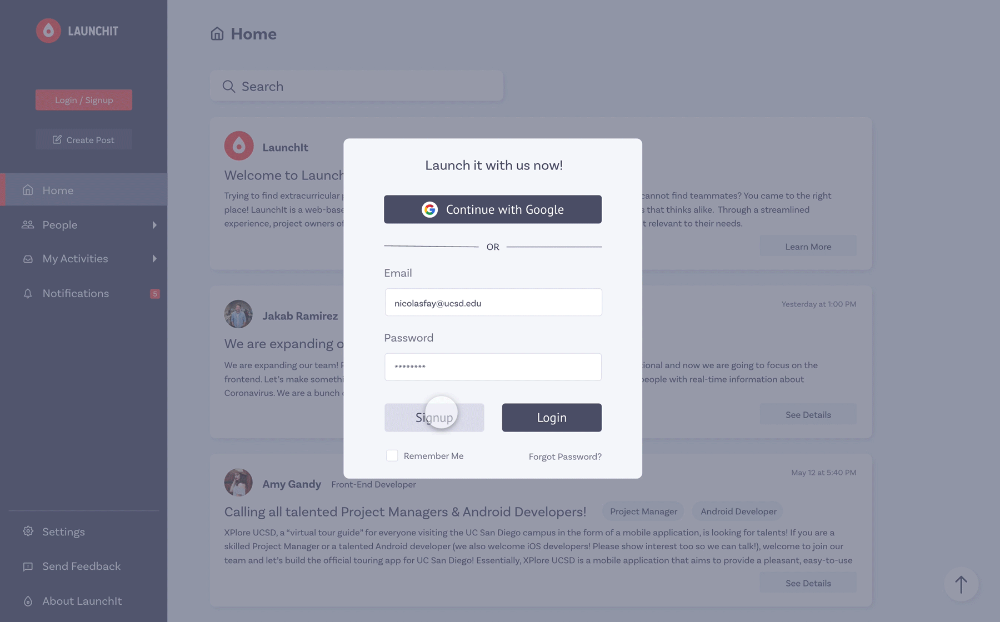
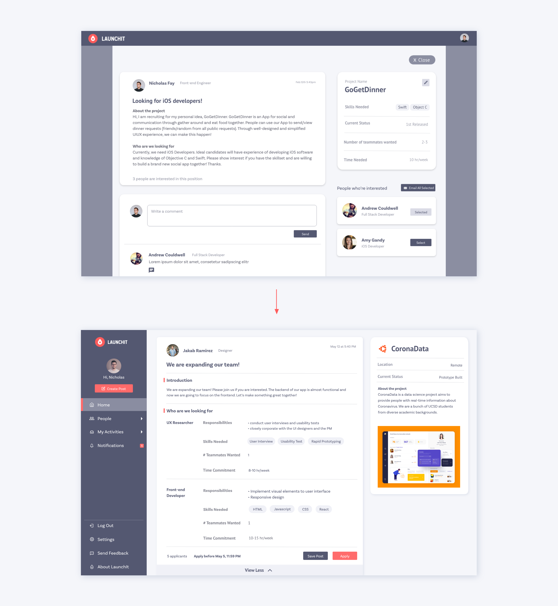
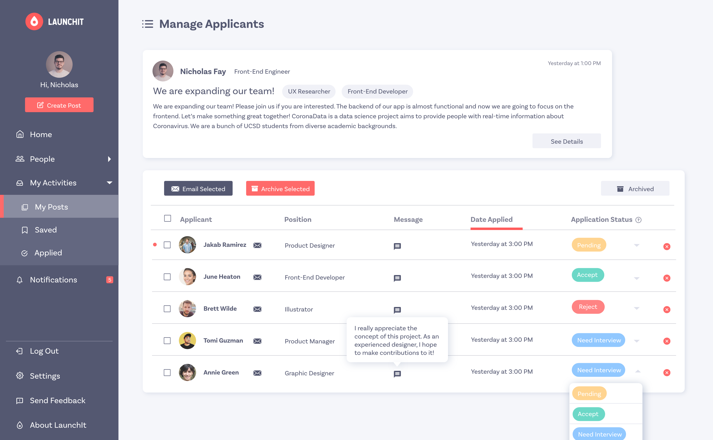
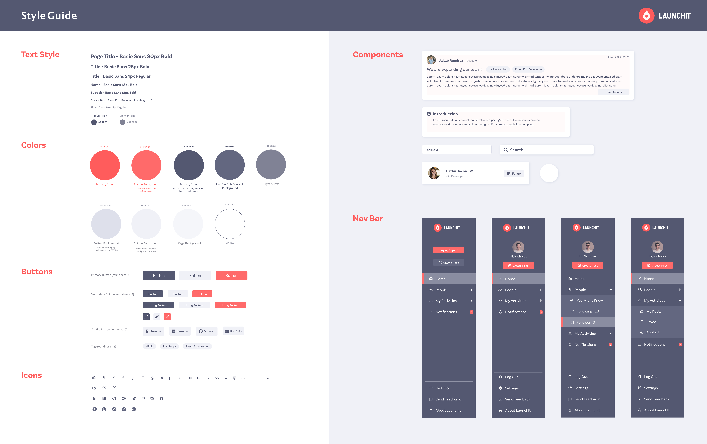

LaunchIt is a website platform that helps college students to form teams for extracurricular projects through the form of posts. Learning experience outside of class is pretty valuable, and many college students hope to practice the subjects they have learned through extracurricular projects. Nonetheless, many of them lack resources to find projects they are fond of or have brilliant ideas but cannot find teammates. On LaunchIt, through a streamlined experience, project leaders can post their ideas and recruit teammates; students who wish to join projects can easily find all kinds of projects within seconds.
I joined LaunchIt in January 2020. The former designer left the team, and they hoped to find new designers to redesign the platform. Since January, my fellow designer and I have made 3 iterations on the user interface. We are dedicated to make the platform more user-friendly and engaging.
Live at www.launchitnow.org/
The Team
LaunchIt
My Role
Redesign user interface with my fellow designer
Conduct user interviews and usability tests
Ideate with my fellow designer and PM
Feature Highlights

Explore interesting projects of all kinds and apply to join

As project leaders, manage applicants and get to know about them comprehensively
Design Process
Phase I
Although LaunchIt was originally designed by another designer, the user interface was way different from the original design at the point I joined, because the team decided to reposition the product, and many features have been changed.
Product repositioning means that another user need research needs to be conducted. But instead of doing user research first, I chose to trust my own skills and experience and to redesign minor components that did not require much efforts for the front-end developers to fix. There were two reasons for this: first, I didn’t want the developers to wait for too long; second, I can use the time to prepare for user interviews while they were coding.
Phase II
User Interview
We interviewed 6 college students with different academic backgrounds, asking about their decision-making process when looking for projects to join or recruiting people for their own projects. At the end of the interviews, we also asked them to play around on LaunchIt and to give us feedback.
Outcome
Through the interviews, we found out that users really care about the details of projects/positions posted and other users’ profiles. We need a way to guide users to fill out more useful information that other users hope to see.
Phase III
Usability Testing
We found 6 people to participate in our usability tests. They were assigned several tasks to go through key features on our design. We gathered lots of useful findings this time. And from the usability tests, we got confidence to make more significant changes on our design, such as the changes of user flows, information structure, and key functions. Below are the main problems we found through the usability tests and our solutions for them.
Problems and Solutions
♦ How can we create more intuitive navigation?
In the original version, there are two navigation bars, one on the top and one on the left. During the usability tests, we found that having two navigation bars is distracting for users, so we decided to put all navigation components on one side bar. We designed at least 5 versions of navigation bars and conducted mini usability tests to come up with the most intuitive one. I realized that users’ conceptual models are very different from designers’, especially regarding navigation, since many users favored the version that I didn’t think would work at first.
♦ How can we encourage users to complete user profiles without affecting their onboarding experience?
When signing up for the first time, users are only asked to fill out some basic information. At the end of sign up process, they can choose to either complete their profiles or skip this part. If they choose to skip, the system will later encourage them to complete profiles when they apply for project positions.
♦ How can we help users to easily find information they hope to see from the post details?
We reorganized the page of post details, by clearly dividing project information and recruitment information into two boxes. Readers can easily find all openings under this project and their corresponding responsibilities and qualifications. In response to user need, we also guide post creators to list out responsibilities of each opening using bullet points rather than inputing big chuck of paragraphs that are less readable.
♦ How can we help project leaders efficiently manage their applicants, learn about them, and contact them?
We added a new page for managing applicants with new functions. Project owners are able to see all applicants’ information on this page from the applicant list. They can modify their application status and contact them via email. They can easily reorder the list by choosing the title of each column.
Style Guide
We created a very detailed style guide to ensure style consistency throughout all pages and for maintainence. It specified the use of colors in different conditions and includes main components.
Outcome
One of my main takeaways from this project is the strategy to efficiently collaborate with engineers. I used to take a long time doing design and usability tests, and only until I completed them, I delivered my design to front-end developers. However, the usage of time for the whole team is inefficient in this way. During the development of LaunchIt, we streamlined the process through more frequent and more efficient communication between designers and developers. For instance, we regularly talk to the PM and together create task priority list for the developers.
The team is working on the 3rd release now. Our user base is expanding as we put great efforts into promotion. In the future, we are going to design the mobile version and add more exciting functions!


© 2020 Jiayu Luo.